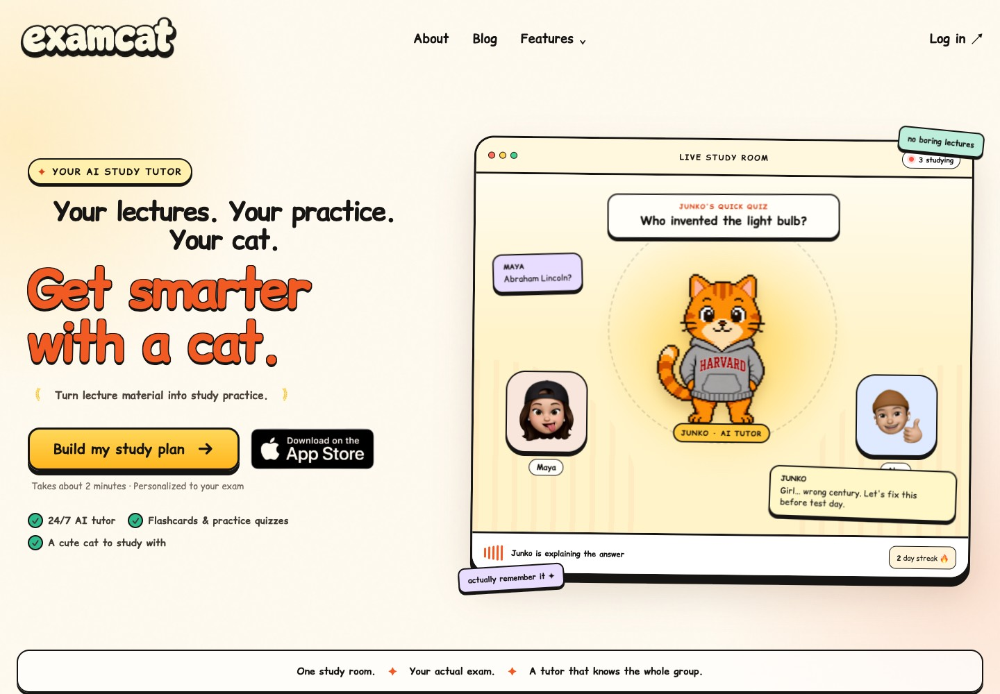

EXAMCAT / STUDY APPLIVE WEBSITE

Examcat
A website I built for a study app with 500+ users.
I’m Saif. I build thoughtful websites for Texas businesses. Clear, easy to use, and made to feel like you.
Explore the workSELECTED WORK
A live website. A fresh concept.
Explore the work.

A website I built for a study app with 500+ users.

A fresh, personal take on home care.
S.W.A.T. is an independent concept demo, not a paid client launch. No affiliation or endorsement is implied.
SMALL PROCESS. THOUGHTFUL DETAILS.
Your services, your story, and what a visitor should do next. We agree on the page and scope before building.
A custom visual direction, a mobile-first layout, and two focused rounds of revisions.
Review a working preview on phone and desktop before giving your final approval.
A SIMPLE START
A focused, one-page website.
Personally designed and built by Saif.
A clear scope. A personal process.
Estimated delivery: one week after required content, access, and deposit are received.
One informational page with the sections agreed before work begins, responsive styling, supplied content, contact links, and two revision rounds. Each round is one consolidated set of changes within the agreed scope.
Extra pages, copywriting, booking or payment systems, custom integrations, and ongoing updates. Domain, hosting, and other third-party fees are separate. Launch arrangements are agreed before work starts.
Your business details, final copy, images you have permission to use, branding, and any required access. We agree on the scope, quote, payment terms, and schedule before work begins.